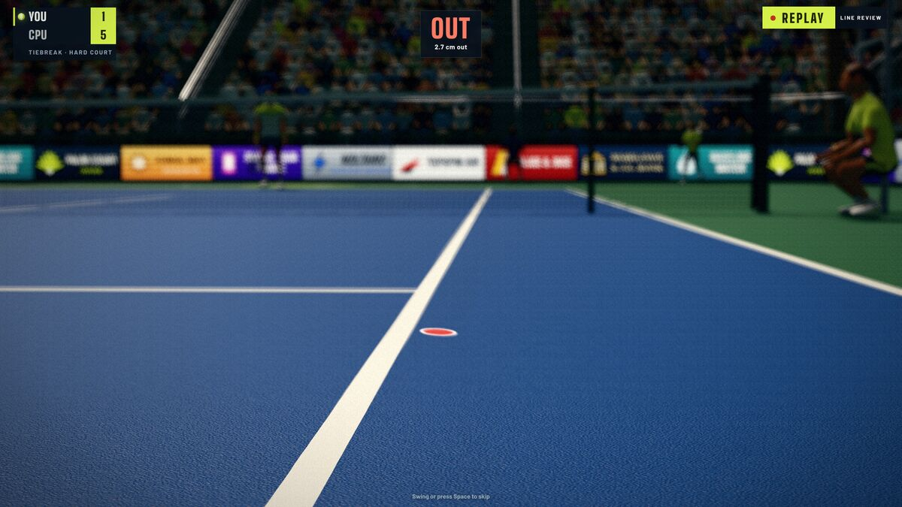

Ask ten tennis fans what a good tennis game is and you get ten answers, because the sport can be turned into a game in very different ways. Some games treat tennis as a quick contest of timing, some as a deep simulation of a career, and some as a way to use your body. None of these is the correct way. They answer different questions, and each costs you something different. Here is a plain guide to the families.
Four broad families
1. Button-based arcade tennis
You press a button to swing, often one for each shot type, and the timing of the press decides the result. The pace is fast, the rules are simple, rallies can be exaggerated, and the games are made for sharing a sofa. Their strength is immediacy: a new player can pick one up in a minute. Their limit is that the skill is mostly in your thumbs, so the feel of an actual stroke is absent.
2. Career and simulation tennis
These aim at realism and depth: detailed ball physics, a long calendar of tournaments, player development, licensed names and the tour as a story. You may spend hours before a match feels fluent, and the games can ask for a lot of your time and a console or a powerful computer. Their strength is breadth and authenticity. Their limit is a steep learning curve and, often, a larger commitment than a casual player wants.
3. Motion-controlled tennis
You swing a controller, a camera-tracked body or a sensor, and the game reads the movement. At their best they are the most physical and the most fun to play with other people in the room. At their worst the reading of the swing is vague, there is a delay between your arm and the screen, and tiring arms limit the session length. They need space, and sometimes dedicated hardware.
4. Browser and phone casual tennis
Short sessions, taps and swipes, nothing to install. They are easy to share by link and run on almost anything, but the games are usually simple and the physics approximate, and a browser limits how much can be shown or downloaded.
What to compare
| Question | Button arcade | Simulation | Motion control | Browser casual |
|---|---|---|---|---|
| What the input is | Buttons | Buttons and sticks, often movement too | Your arm or body | Taps or swipes |
| How realistic is the ball | Stylised | Usually the highest | Varies | Often simple |
| Time to first fun | Minutes | Hours | Minutes, plus setup | Seconds |
| What you need | A console or computer | A console or computer | Space and often hardware | A browser |
| Best with | A friend on the sofa | Yourself, for a long haul | Friends, standing | A short break |
Where Palm Court sits
Palm Court is a browser game that borrows from more than one family, and it helps to be exact about which parts.
- From motion control: you can swing a phone, your hand or your arm in front of a webcam. The swing is read for its timing, its shape and its speed, and those decide aim, spin and pace. You do not control your player’s feet: the player runs to the ball for you. The game is honest about the cost: a webcam adds its own delay, which the game measures and compensates for, and a poorly lit room makes tracking worse (see the camera troubleshooting guide).
- From simulation: the ball is a real 57.7 gram sphere stepped 240 times a second with gravity, air drag and the lift that spin produces; the court has the official dimensions; the net dips in the middle; and a ball is in if any part of its mark touches a line (a line review shows it). Three surfaces change the bounce. That realism, however, is applied to short matches (a tiebreak, a short set or a full set), not to a career-long management game.
- From arcade tennis: matches are quick, there is a Survive round and a Blitz round, and couch play and doubles exist. You can play with a controller too, holding a shot button and letting go as the ball arrives.
- From browser casual: nothing to install, one link to share, and a save that lives in the browser. It does ask for a modern browser with WebGL.

What Palm Court does not try to be
- It is not a licensed tour. The five pros are fictional characters with parody names, and the tournaments and sponsors are made up.
- It does not hand you movement. If you want to run your player, choose a different kind of game.
- It is smaller than a big-budget simulation. The free browser version has one World Tour tier, five pros and three surfaces, and no long story mode.
- Motion tracking is not perfect. A swing can be missed or late, and the best way to avoid that is the phone racket, or a controller, which need no tracking at all.
- It does not sell advantages. There is no real-money store; Fuzz is earned in play, and gear gives small trade-offs, not a single best item (see the economy guide).
Comfort, space and safety
Any game that asks you to swing needs a few honest words about the room. A phone racket asks for clear space around you and a firm grip (a wrist strap or a grippy case, and nothing fragile within reach), which is why the phone guide starts with a safety note. A camera control asks for a lit room and a spot about two metres from the screen, and nothing else. A short set takes around eight minutes in the game’s own balance model, so a session is not long enough to wear out an arm, and the mouse and the controller are always there for days you would rather sit still. Choosing a control is a comfort decision as much as a skill one.
Questions to ask yourself
- Do I want to play the shot, or choose it? If you enjoy the stroke itself, a motion game suits you; if you prefer picking from a menu of shots, buttons do.
- How long a session do I want? A browser game fits ten minutes; a career game fits a weekend.
- Who am I playing with? A friend in the room, a friend far away, strangers online, or the computer.
- What do I have? A webcam, a phone, a controller, or only a mouse. Palm Court works with any one of them, so you can find out in two minutes for free: here is how.
The honest summary is that the best tennis game is the one that fits what you want from tennis. If you want to swing something, share it with a link and spend a short session on a court that behaves like a real one, Palm Court was built for that. If you want a licensed circuit and a decade-long career, another kind of game will serve you better, and that is a perfectly good answer.